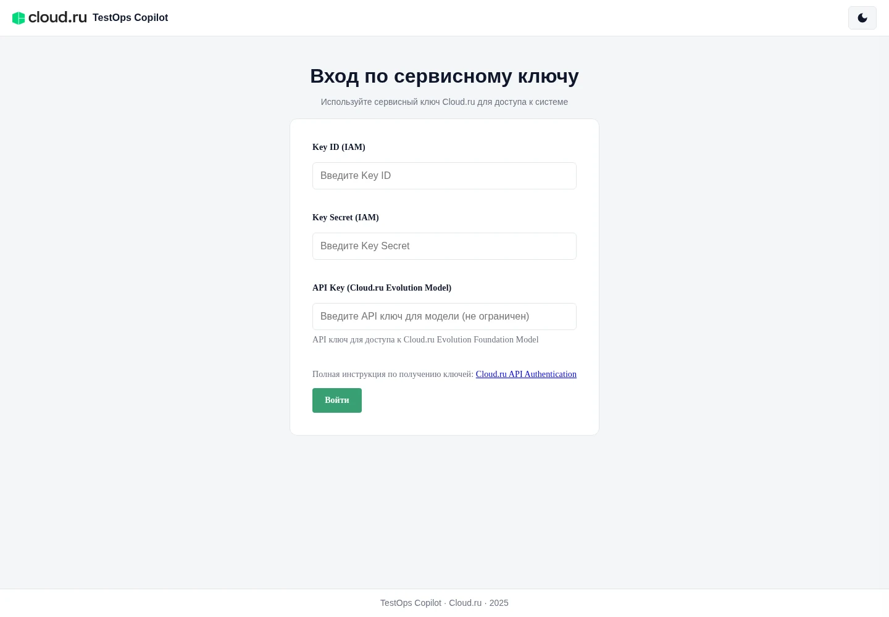

Разбор проекта / AI & QA
TestOps
Copilot.
От описания проверки до фоновой задачи. Как API, очередь и хранение результатов связаны в командном QA-проекте.
Проследить путь задачиВызов API из frontend · форматирование адаптировано
const response = await apiClient.post(
'/api/v1/generate/test-case',
request
)
return response.data- Формат
- Командный проект · fork
- Фокус разбора
- API, очередь и результаты
- Версия исходников
005db45
01 / Контекст
Долгая задача.
Понятный статус.
QA-инженер описывает проверку и выбирает тип теста. В контракте запроса предусмотрены manual, api и ui, а также приоритет и контекст задачи.
API возвращает идентификатор фоновой задачи. Её выполнение, прогресс и сохранённые файлы представлены отдельными частями системы.
Технические пояснения относятся к командной кодовой базе из моего форка. Все ссылки в разборе закреплены на одной версии исходников.

02 / Путь задачи
Запрос принят.
Работа — в очереди.
Один сценарий из исходников: постановка задачи генерации тест-кейса. Каждый этап связан со своим участком кода.
- 01 / Интерфейс
React dashboard
Функция
Вызов из frontend, новая вкладкаgenerateTestCaseотправляет описание и параметры теста через API-клиент. - 02 / Вход в систему
Integration Gateway
Маршрут
Маршрут gateway, новая вкладка/generate/test-caseпередаёт тело запроса и заголовки в Core Agent черезhttpx. - 03 / Постановка
FastAPI → Celery
Core Agent проверяет приоритет, вызывает
Создание задачи, новая вкладкаgenerate_test_case_task.delay, сохраняет метаданные и возвращаетtask_idсо статусомpending. - 04 / Выполнение
Фоновый worker
Задача готовит промпт, обращается к LLM-клиенту и обновляет прогресс. Чтение статуса вынесено в отдельный API-метод.
Логика генерации, новая вкладка
Идентификатор связывает запрос и результат
Ответ на создание содержит task_id. Метод GET /api/v1/tasks/{task_id} читает состояние Celery и формирует ответ с полями status, result, error и progress.
03 / Обратная связь
Видно, что
происходит.
Четыре состояния из обработчика статуса. Это описание контракта API по коду — состояние реальной задачи здесь не отображается.
pendingОжидает выполнения- Для состояния Celery
PENDINGобработчик проверяет наличие записи задачи в базе. in_progressВыполняетсяPROGRESSпреобразуется в ответ с текущим шагом, общим числом шагов, процентом и сообщением.completedРезультат готов- При
SUCCESSответ содержит сериализованный результат и прогресс 100%. failedВозникла ошибка- При
FAILUREобработчик извлекает описание ошибки и возвращает его в полеerror.
04 / Результаты
Статус задачи.
Файлы отдельно.
В исходниках разделены результат Celery, запись истории и содержимое сгенерированных файлов.
TaskRecordИстория задачи- Хранит идентификатор, описание, тип теста, приоритет и статус. Отдельные поля предусмотрены для ошибки и сообщения о прогрессе.
TaskArtifactСодержимое файлов- Связан с записью задачи. Модель содержит имя файла, описание и текст результата; при чтении статуса обработчик пытается сохранить полученные артефакты.
- Чтение файловОтдельный метод Core Agent
Открыть обработчик, новая вкладкаGET /api/v1/tasks/{task_id}/artifactsвозвращает сохранённые файлы из базы, обращаясь кTaskRecordиTaskArtifact.
05 / Исходники
От пояснения
к конкретному коду.
Срез 005db45. Разбор описывает устройство исходников; качество AI-генерации и работа развёрнутого сервиса здесь не оцениваются.
Документация проекта
Назначение QA-ассистента, состав сервисов и технологический стек командного проекта.
README на GitHub, новая вкладка 02 / КонтрактСоздание задачи
Поля запроса, проверка приоритета, вызов Celery и сохранение метаданных.
Обработчик FastAPI, новая вкладка 03 / Обратная связьСтатусы и артефакты
Чтение состояния Celery, сохранение снимка результата и выдача файлов задачи.
Методы работы с задачами, новая вкладка 04 / ДанныеМодели SQLAlchemy
Поля истории задачи, содержимое артефактов и связь между ними.
Модели хранения, новая вкладкаЕсть задача для автоматизации?
Начните с описания процесса. Короткий бриф поможет собрать детали.